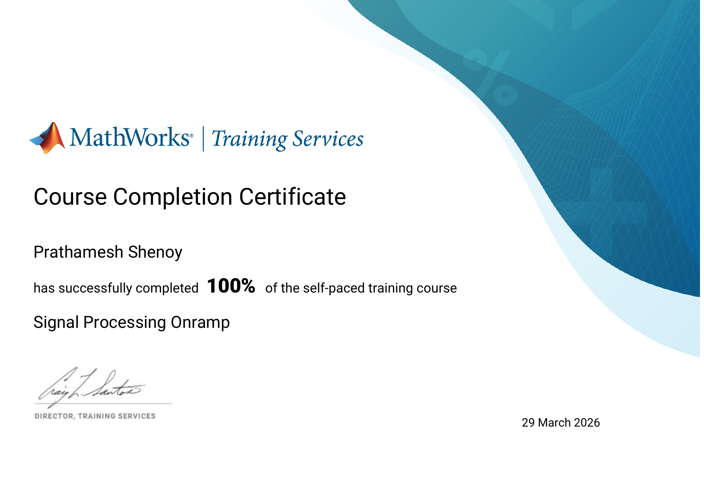
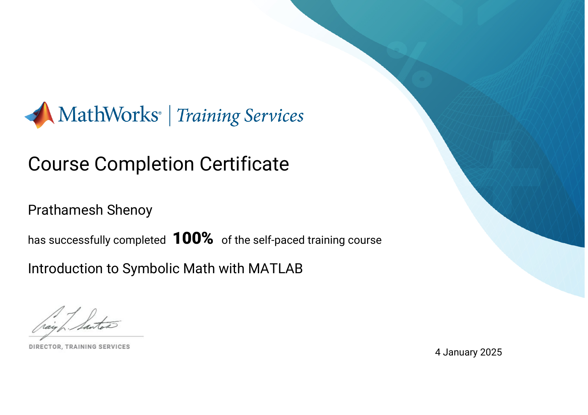
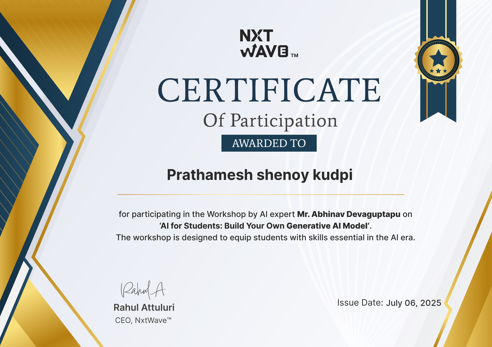

HELLO, I'M
Prathamesh Shenoy
Aspiring VLSI Engineer
Electronics & Communication Engineering student passionate about VLSI, digital electronics and chip design.

Electronics & Communication Engineering
HELLO, I'M
Electronics & Communication Engineering student passionate about VLSI, digital electronics and chip design.
Electronics & Communication Engineering
I am an Electronics and Communication Engineering student currently learning digital electronics, C programming, Verilog, FPGA design and VLSI.
WHAT I WORK WITH
Technologies and tools I have worked with through my projects, coursework and technical training.
Core digital design concepts and hardware description.
Programming and logic-building skills for engineering applications.
Simulation and analysis of signals and communication systems.
Tools used for simulation, modelling and hardware development.
A real-time embedded rehabilitation system that uses an IMU sensor to monitor foot movement, detect abnormal gait patterns associated with foot drop, and support rehabilitation.
IMU Sensor | Embedded Systems | Signal Processing | Rehabilitation
A communication systems project exploring noise-aided demodulation of 4-PAM signals using a one-bit comparator.
Communication Systems | 4-PAM | Comparator
A digital security lock designed using the CD4017 decade counter and digital logic.
CD4017 | Digital Electronics | Logic Gates

MathWorks • Certification
Completed the Signal Processing Onramp training.

MathWorks • Certification
Completed training in symbolic mathematics using MATLAB.

NxtWave • Workshop
Participated in a workshop focused on Generative AI and building AI models.
GET IN TOUCH
I'm always interested in learning, building projects and connecting with people in the electronics and VLSI space.